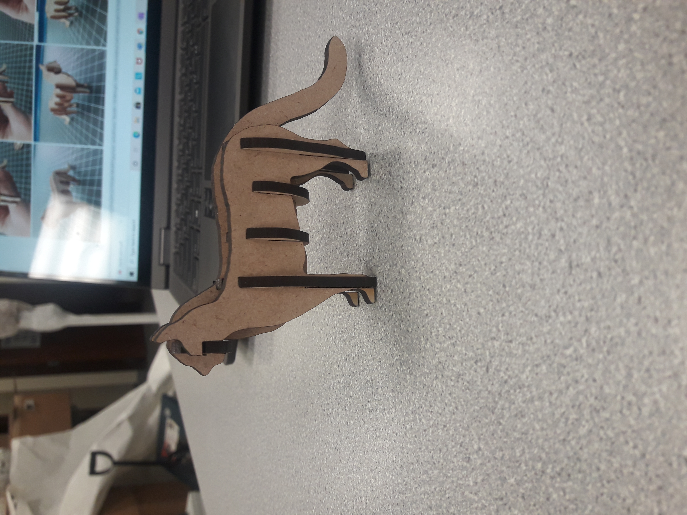
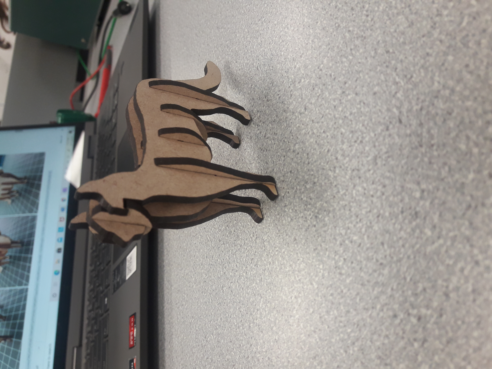
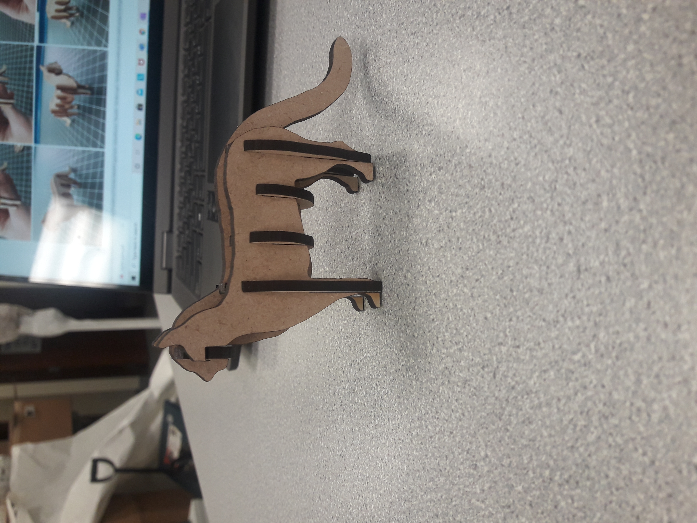
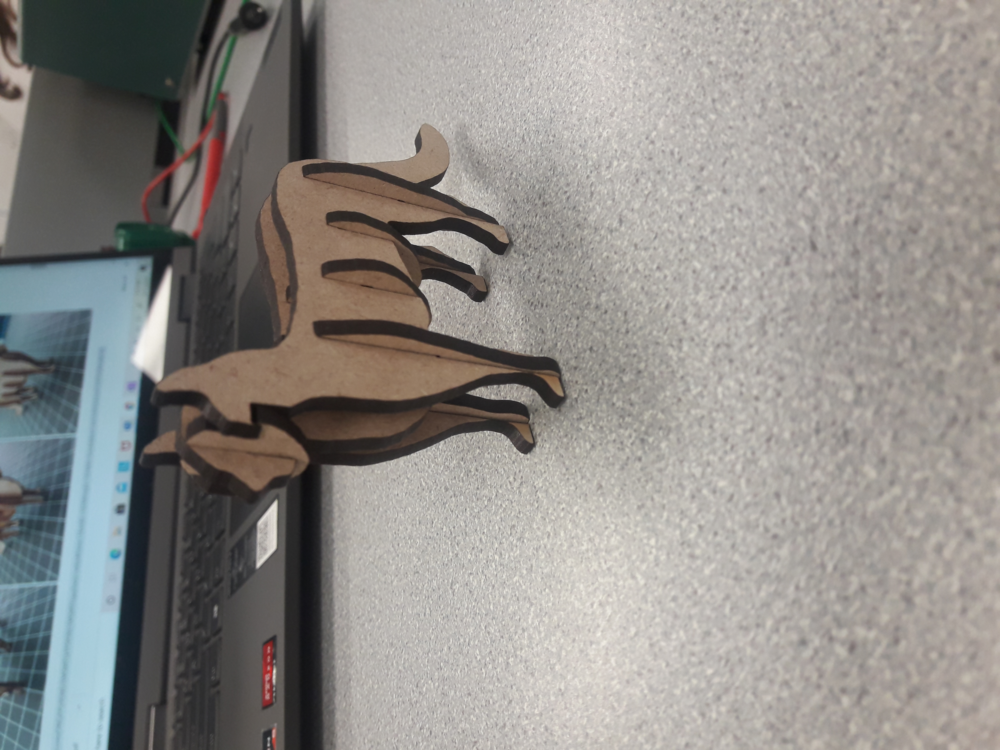
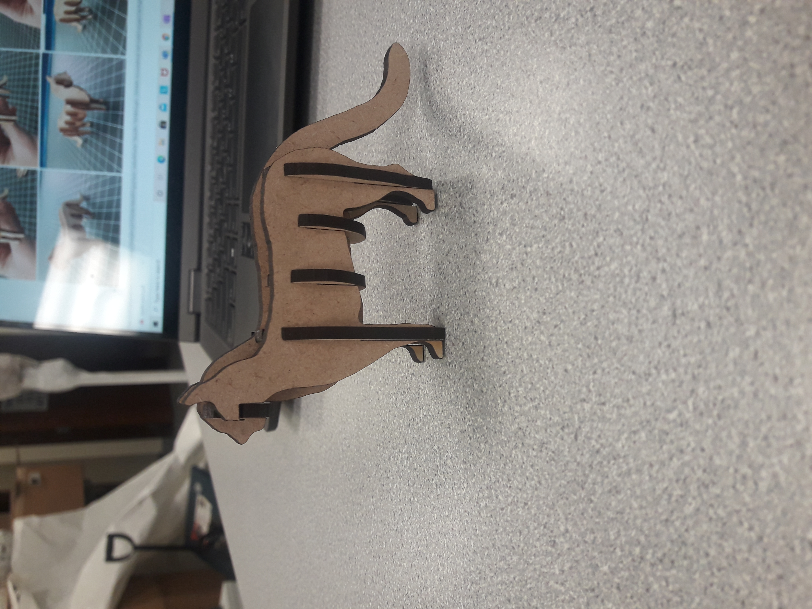
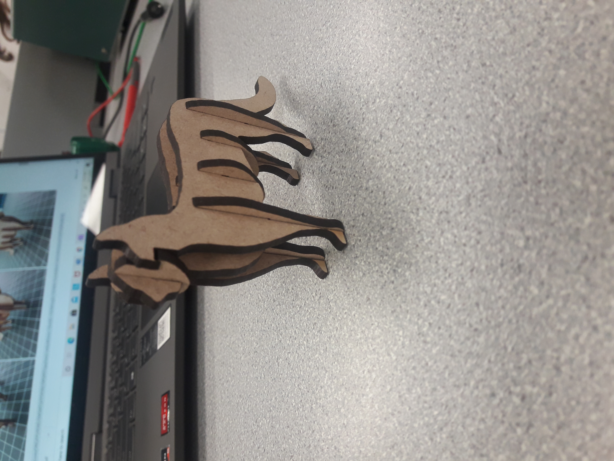

Here is a website that will show my progress on my Projects for Creation 101
I set up this website through GitHub and help from my brother LeRoyce, Yay!
We were told to make something on a laser cutter, so naturally I made a cat! I searched on google for a template of a cat and found this handy one I then sent it to the laser cutter through Glowforge and it did its business and voila! Cat! *His Name is Damien*


I attended a lecture on making PCB boards. Then was given a template of a board to design on Eagle. I played around with the design and sent it to the Lab to be printed. Then I spent 3 hours soldering on all the tiiiiny little components. Here is the finished product.


I decided to make another trinket. It was printed all in one piece and is able to move around, this one has is what is called a Flexi. Therefore, Flexi Rexi

After some brain storming I decided I wanted to make a laptop stand.


I decided to go with the simplest design, making just 3 parts and having the angle be set. I researched what angles other stands were set and decided to go with a 25 degree angle. I transfered my 3d files to the handheld cnc router and cut out my design. Overall, the cut is incredibly straight for how shakey my hands were. Though there are some rough edges. I then glued the interlocking edges together and held it together with clamps. I am pretty happy with the stand it has helped me have better posture.
For this week I decided to make a gift for my Aunt that got married on Saturday. Her and her fiance bonded over Avatar the Last Airbender, so I decided to make custom chocolate from the series. I also wanted to make a candle to commemorate their engagement. They got engaged in front of a barn in Montana. First I found 3D models of things from the show and of a barn, then printed them at the lab. I didn't have time to take pictures of the 3D printed models.>


The candle barn didn't turn out as I had hoped. It was too small for the sand to pick up the minute details on the barn so it looked more like a amorphus shape than a barn.>
I pressed the models into brown sugar. Though they were not as clear as I would have wanted, these ones turned out considerably better than the barn. Overall I was fairly happy with the results.


A Creepy Halloween Doll that tracks motion

The doll will have a motion tracker in the head. As people walk up the sidewalk the doll's eyes and head will track them. I may end up having the doll on a motor powered tricycle that will drive forward if a person is close enough. We will see where this idea goes.